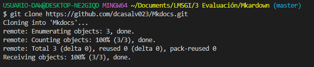
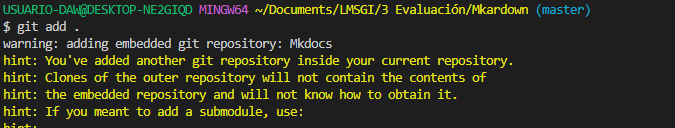
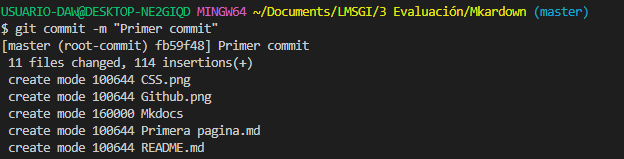
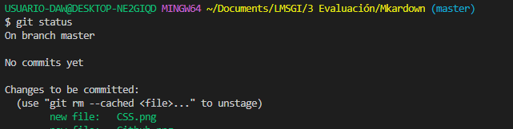

Introducción:
Estamos ante un sitio web, donde hablamos un poco sobre al autor, sobre que es lo que estudia dia a dia y los distintos lenguajes de programación que se da en su curso.
Recorrido
Para llegar hasta este punto hemos hecho un proceso y eso es lo que vamos a indicar a coninuación:
-
Primera página. He contado un poco sobre mi, y los enlaces de mis redes socialesa principales se han puesto.
-
Segunda página. Se ha hablado sobre las diferentes actividades que se hace cada dia en el curso de DAW y el enlace al sitio web del instituto.
-
Tercera página. Hablamos de los diferentes lenguajes de programación que hemos dado en este curso 2022/2023.
Los diferentes códigos que hemos usados para pasar el markdown a github son:

El git clone lo usamos para copiar el sitio donde vamos a poner en el github a nuestros archivos.

El git add . añade un cambio del directorio de trabajo en el entorno de ensayo.

El commit -m "" confirma una instantánea del directorio del entorno de ensayo en el historial de confirmaciones de los repositorios.

El git status muestra el estado del directorio de trabajo y del área del entorno de ensayo.

El git push carga contenido del repositorio local a un repositorio remoto.